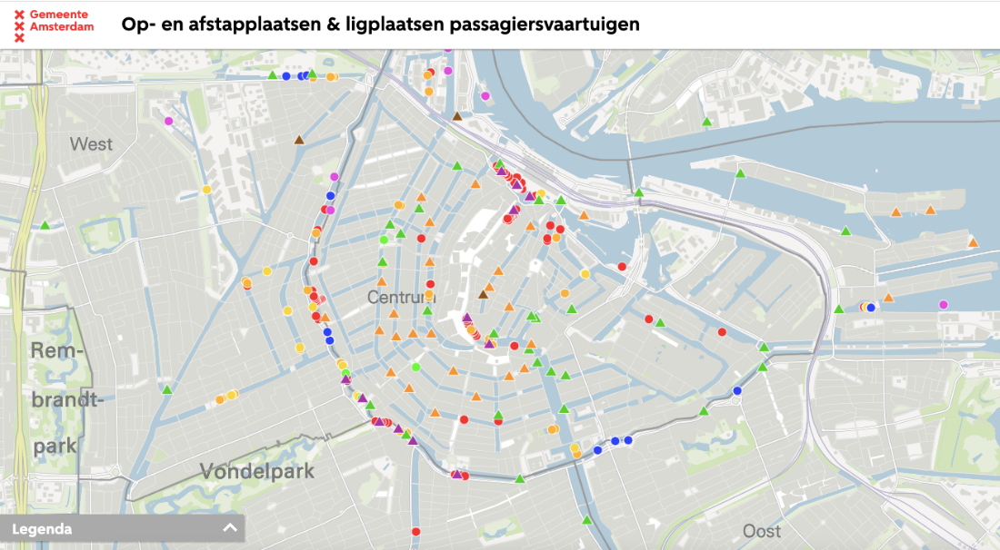
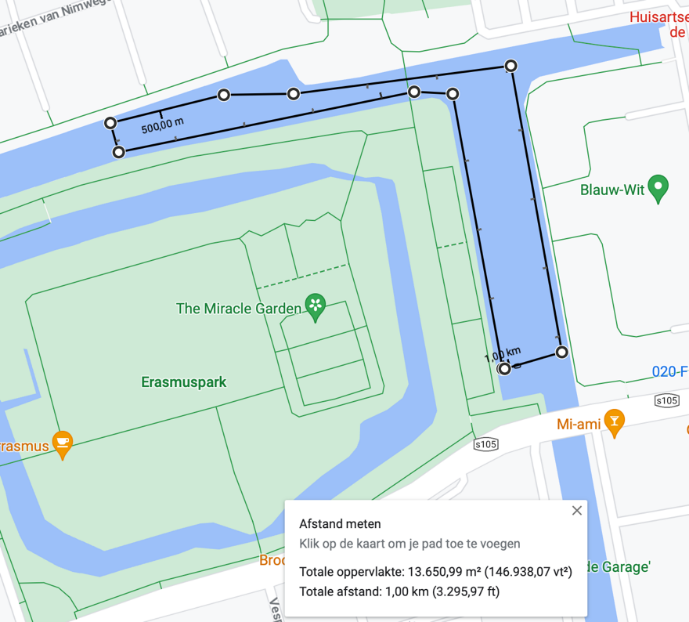
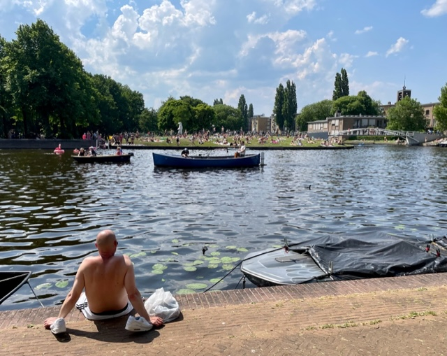
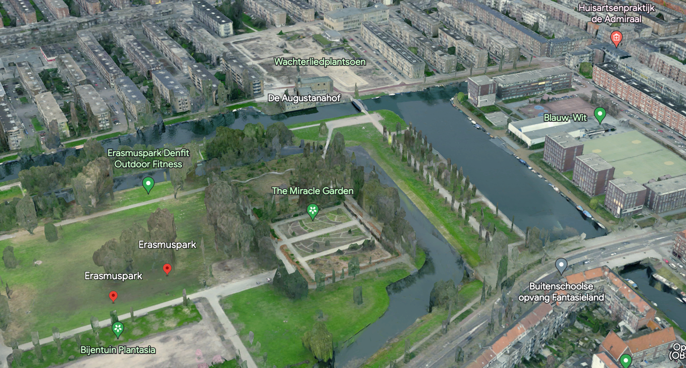
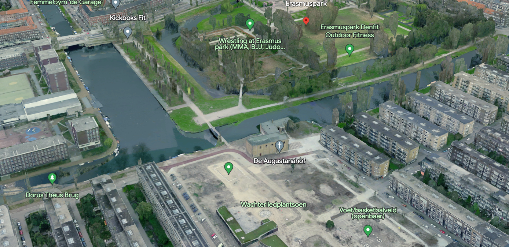
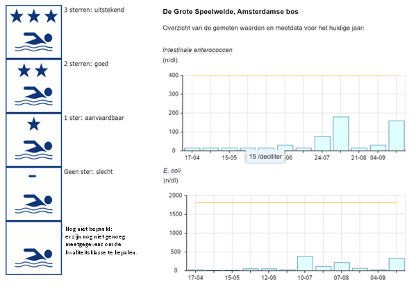

Water
The event can’t have an impact on commercial water transport.

As commercial water transport in Amsterdam mostly consists of canal tours for tourists, public transport, and cargo shipping (1,2,3), the routes for these types of transport take place in the wider waterways of Amsterdam. This map of the municipality of Amsterdam (2021) shows the public boarding and drop-off locations for transport and passenger shipping and the anchorage locations for small to large boats. As can be seen, these points are generally located in the city centre of Amsterdam.
Figure 1: Source: Municipality of Amsterdam, 2021 (21 December)
Here, we chose the location for the anti-French swimming competition at the west side of Amsterdam: near to the Erasmuspark, the Erasmusgracht, circled on the map above.
Here, we tracked the route of 1km, where the swimmers can swim the same route 5 times. where crowds in the park can cheer on the swimmers. The bridge will function as the starting point and also the finish line. All in all, a great mini swim to show the French who is boss.



What is the pollution level of the canal?
The quality of the canal water surrounding the Erasmus Park in Amsterdam West has been monitored for several years and it can be categorized as ‘good’, which means it has no serious health risks (4) But it has not been selected as an official swimming spot, where https://www.zwemwater.nl/ doesn’t track its water quality (yet). It measures whether certain bacteria (intestinal enterococci (IE) and Escherichia coli (E. coli) are present in the water. Both species of bacteria are found in human and animal feces and are good indicators of bathing water quality (5). When levels are above 400 n/dl for IE and 1800 n/dl for E.coli, the water is forms a health risk.(6). Then, it gets one of five classes, see Figure FIXME.
We used data from other water bodies with ‘good’ (2 stars) as their class. At De Grote Speelweide, Amsterdamse bos(7) , the measurements taken in May 2023 were 15 n/dl for IE and 46 n/dl. As shown in the graph below, both are far under the yellow line that represents the health risk bar. This makes the Erasmusgracht an suitable swimming place for the Paralympics.

Data sets that are of use for giving a proper advice to the municipality.
How an official swimming location must be arranged is not defined by law. The province assesses safety, with the environmental department conducting the necessary research (8). Below are possible and usable datasets for the municipality to use to determine if our chosen place is a proper swimming location.
Data sets with data showing how strong the currents are in that specific water body
Data sets with data that show the measurements of the water body
Data sets with data that keeps track of the waste in the water body
Resources
1.Rondvaarten | Amsterdam. (z.d.). https://amsterdam.org/nl/rondvaarten.php
2.Gemeente Amsterdam Klaas-Bindert de Haan. (z.d.). Op- en afstapplaatsen & ligplaatsen passagiersvaartuigen. https://maps.amsterdam.nl/varen/
3.Amsterdam Boothuur B.V. (2023, 13 maart). Vaarroutes in Amsterdam - Amsterdam boothuur. Amsterdam Boothuur. https://amsterdamboothuur.nl/vaarroutes/
4.Mooyman, R. (2023). Waterkwaliteit Wildzwemplek bij Erasmuspark ‘goed’. De Westkrant. https://www.dewestkrant.nl/waterkwaliteit-wildzwemplek-bij-erasmuspark-goed/
5.Kwaliteitsklasse: waterkwaliteit in de laatste vier jaar | Zwemwater.nl. (n.d.). https://www.zwemwater.nl/kwaliteitsklasse#goed
6.Controle van de waterkwaliteit | Zwemwater.nl. (n.d.). https://www.zwemwater.nl/schoon_water_kwaliteit
7.V.d. Bent, K. M., & Balster, W. A. (2022). Actualisatie zwemwaterprofiel: De Grote Soeekweide Amsterdamse Bos. In Zwemwater.nl (DIG-10260). Hoogheemraadschao van Rijnland. https://register.zwemwater.nl/zwr/api/files/8137640
8.Gemeente Amsterdam. (2022). Zwemmen & zomerrecreatie aan het water: Ambtelijk handboek. https://openresearch.amsterdam/image/2022/4/1/ambtelijk_handboek_zwemmen_en_zomerrecreatie_aan_het_water.pdf